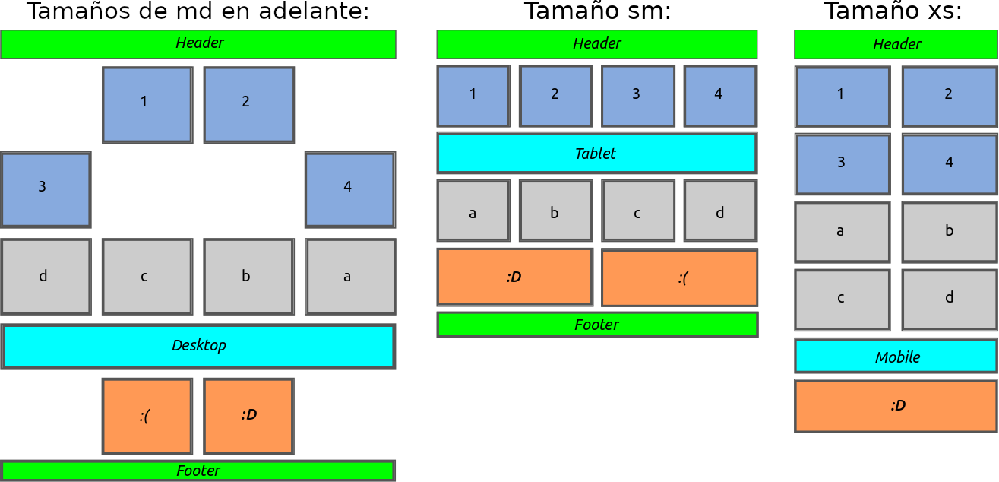
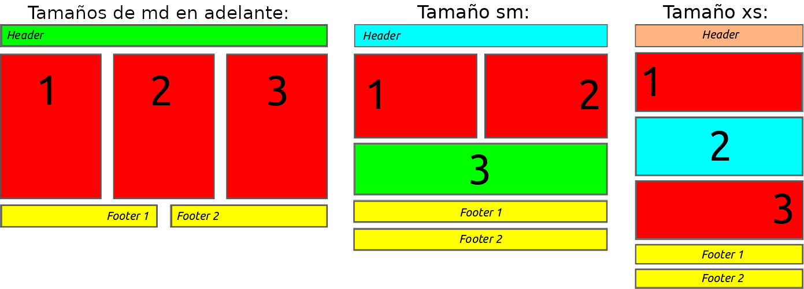

Ejercicios 2¶
Ejercicio 1 - Offset y ordenación¶
En este ejercicio vamos a practicar con algunas características más de Bootstrap: la posibilidad de añadir un offset (o espacio inicial a las columnas), el cambio de orden de los elementos de una fila y la visibilidad de las columnas según el tamaño del dispositivo.
Para ello nos crearemos una nueva página web partiendo de la plantilla básica, le añadiremos un contendor de tipo container e iremos añadiendo filas y columnas intentando imitar el diseño, colores y contenidos del esquema de la siguiente figura:

Tened en cuenta que:
- La segunda fila (que contiene 4 columnas con los números 1, 2, 3 y 4) es solamente una fila a la que se le han añadido offsets. Para forzar el cambio de fila se puede añadir un elemento entre la 2ª y la 3ª columna que solo sea visible cuando la pantalla sea mediana o grande (md, lg, xl o xxl) y que aplique la clase
.w-100de Bootstrap. - El orden de la tercera fila (con las letras a, b, c, d) se ha alterado para las disposiciones de pantalla grandes (md, lg, xl y xxl) usando las clases de bootstrap
order-*. - En la 5ª fila naranja se ha aplicado un cambio de orden y un offset para las pantallas grandes y medianas (md, lg, xl y xxl). Además, cuando la pantalla sea de tipo xs se deberá de ocultar una de sus columnas.
- La fila azul claro en la que pone Desktop (para pantallas md, lg, xl y xxl), Tablet (para sm) y Mobile (cuando la pantalla es xs) en realidad son 3 filas distintas con clases para que solo se muestren en dichos tamaños de pantalla.
- La última fila (Footer) se deberá de ocultar solamente cuando la pantalla sea del tipo xs.
Ejercicio 2 - Personalizando mediante media query¶
En este ejercicio se pide que creéis una nueva página web usando la librería Bootstrap. El contenido aparecerá centrado en la pantalla y constará de tres filas con el siguiente contenido y disposición, cuando la pantalla sea de tamaño medio (md) y grande (lg, xl y xxl):
- Una fila en la parte superior con una única columna con fondo verde que ocupará todo el ancho, en dicha columna aparecerá el texto "Header" alineado a la izquierda y en grande.
- Una segunda fila con tres columnas en color rojo con el mismo ancho y con los números 1, 2 y 3 (respectivamente) centrados y en letras grandes.
- La tercera y última fila contendrá dos columnas de igual ancho y en color amarillo, la primera columna tendrá el texto "footer 1" alineado a la derecha y la segunda el texto "footer 2" alineado a la izquierda (ambos usando un tamaño de fuente grande).
En la siguiente imagen se puede ver un esquema de la web a realizar:

Como se puede ver en el esquema de la imagen, la disposición de las columnas y la alineación de los textos variará dependiendo del tamaño de la pantalla. Tenéis que reproducir este comportamiento para que la apariencia de la web sea similar al esquema (número de columnas, alineaciones de los textos y colores) cuando el tamaño de la pantalla sea la de un tablet (sm) o la de un teléfono (xs).
Tened en cuenta que:
- Siempre que sea posible se utilizarán las clases que provee Bootstrap.
- Cuando no sea posible (por ejemplo para controlar la alineación de los textos y el cambio de color del fondo) tendréis que definir una media query que lo haga.